简述
iOS的UITableView显示单列垂直滚动内容。表格中的每一行都包含一段应用内容。例如，“联系人”应用程序在单独的行中显示每个联系人的姓名，“设置”应用程序的主页面显示可用的设置组。您可以将表配置为显示单个长行列表，也可以将相关行分组为多个部分，以便更轻松地导航内容。

UITableView
UITableView管理表的基本外观，但应用程序提供显示实际内容的单元格（对象）。标准单元格配置显示文本和图像的简单组合，但您可以定义显示所需内容的自定义单元格。您还可以提供页眉和页脚视图，以便为单元格组提供其他信息。
UITableView有两种风格：UITableViewStylePlain和UITableViewStyleGrouped。这两者操作起来其实并没有本质区别，只是后者按分组样式显示前者按照普通样式显示而已。大家先看一下两者的应用：
不分组样式
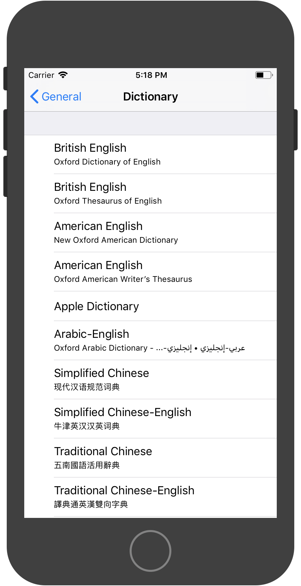
分组样式
UITableView的层次结构
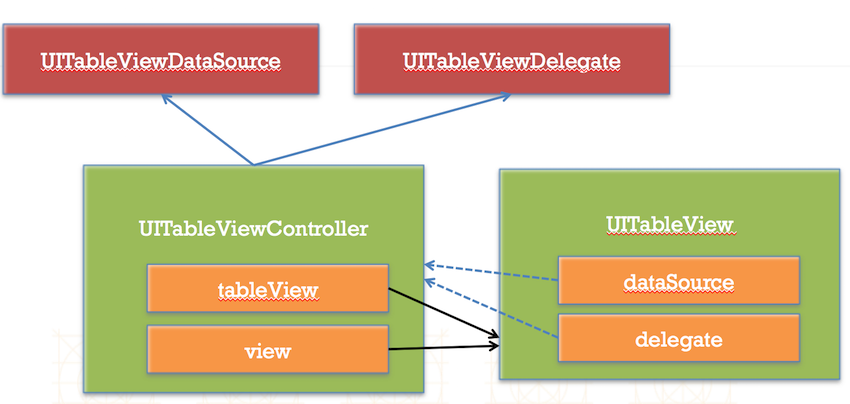
UITableViewCell
UITableViewCell对象是管理单个表行内容的专用视图类型。您主要使用单元格来组织和显示应用程序的自定义内容，但UITableViewCell提供了一些特定的自定义以支持与表相关的行为：
将选定内容或突出显示颜色应用于单元格。
添加标准附件视图，如详细信息或披露控制。
将单元格置于可编辑状态。
缩进单元格内容以在表中创建可视层次结构。
A
UITableViewCellobject is a specialized type of view that manages the content of a single table row. You use cells primarily to organize and present your app’s custom content, butUITableViewCellprovides some specific customizations to support table-related behaviors, including:
- Applying a selection or highlight color to the cell.
- Adding standard accessory views, such as a detail or disclosure control.
- Putting the cell into an editable state.
- Indenting the cell’s content to create a visual hierarchy in your table.
Your app’s content occupies most of the cell’s bounds, but the cell may adjust that space to make room for other content. Cells display accessory views on the trailing edge of their content area. When you put your table into edit mode, the cell adds a delete control to the leading edge of its content area, and optionally swaps out an accessory view for a reorder control.
UITableViewCellStyle/UITableViewCell.CellStyle
1 | extension UITableViewCell { |
1 | typedef NS_ENUM(NSInteger, UITableViewCellStyle) { |
Cell的层次结构
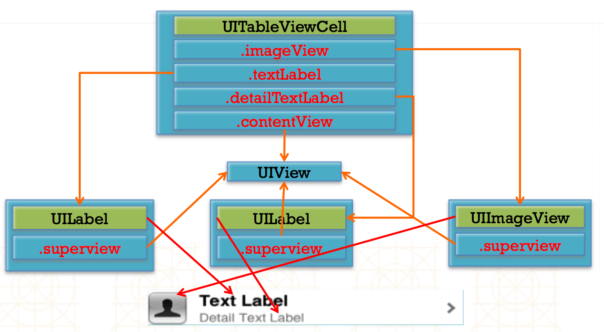
UITableViewDelegate
UITableViewDelegate用来管理选择，配置节页眉和页脚，删除和重新排序单元格以及在表格视图中执行其他操作的方法。例如：
- 创建和管理自定义页眉和页脚视图。
- 指定行，页眉和页脚的自定义高度。
- 提供高度估计以获得更好的滚动支持。
- 缩进行内容。
- 响应行选择。
- 响应表行中的滑动和其他操作。
- 支持编辑表格的内容。
代理方法：
配置表视图行
1 | func tableView(UITableView, willDisplay: UITableViewCell, forRowAt: IndexPath) |
响应行选择
1 | func tableView(UITableView, willSelectRowAt: IndexPath) -> IndexPath? |
提供自定义页眉和页脚视图
1 | func tableView(UITableView, viewForHeaderInSection: Int) -> UIView? |
提供页眉，页脚和行高
1 | func tableView(UITableView, heightForRowAt: IndexPath) -> CGFloat |
估计表格内容的高度
1 | func tableView(UITableView, estimatedHeightForRowAt: IndexPath) -> CGFloat |
管理附件视图
1 | func tableView(UITableView, accessoryButtonTappedForRowWith: IndexPath) |
响应行动作
1 | func tableView(UITableView, leadingSwipeActionsConfigurationForRowAt: IndexPath) -> UISwipeActionsConfiguration? |
管理表格视图亮点
1 | func tableView(UITableView, shouldHighlightRowAt: IndexPath) -> Bool |
编辑表行
1 | func tableView(UITableView, willBeginEditingRowAt: IndexPath) |
重新排序表行
1 | func tableView(UITableView, targetIndexPathForMoveFromRowAt: IndexPath, toProposedIndexPath: IndexPath) -> IndexPath |
跟踪删除视图
1 | func tableView(UITableView, canFocusRowAt: IndexPath) -> Bool |
UITableViewDataSource
UITableViewDataSource用于管理数据并为表视图提供单元格的对象采用的方法。
UITableView仅管理其数据的表示; 他们不管理数据本身。要管理数据，请为表提供数据源对象，即实现协议的对象。数据源对象响应来自表的与数据相关的请求。它还可以直接管理表格的数据，或与应用程序的其他部分协调以管理该数据。
- 指定表中的节和行数。
- 为表的每一行提供单元格。
- 为节标题和页脚提供标题。
- 配置表的索引（如果有）。
- 响应需要更改基础数据的用户或表启动的更新。
指定行和节的位置
UITableView使用NSIndexPath对象的row和section属性来进行单元格的位置定位。行索引和节索引是从零开始的，所以第一节位于索引0，第二节位于索引1，依此类推。同样，每个节的第一行位于索引0处，这意味着您需要节值和行值来唯一标识行。如果表没有节，则只需要行值。
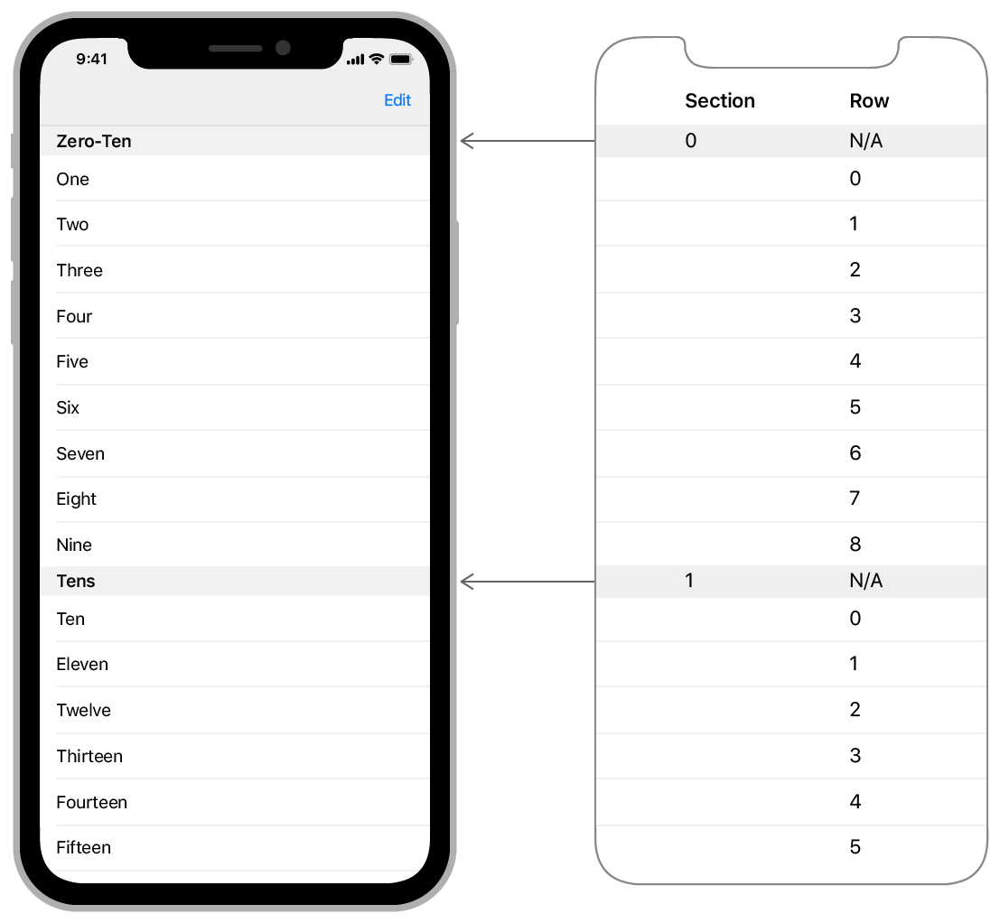
该协议必须实现两个方法
1 | // Return the number of rows for the table. |
使用此协议的其他方法为表启用特定功能。例如，您必须实现该方法以启用行的滑动到删除功能。
tableView(_:commit:forRowAt:)
代理方法
提供行数和节数
1 | func tableView(UITableView, numberOfRowsInSection: Int) -> Int |
提供单元格，页眉和页脚
1 | func tableView(UITableView, cellForRowAt: IndexPath) -> UITableViewCell |
插入或删除表格行
1 | func tableView(UITableView, commit: UITableViewCell.EditingStyle, forRowAt: IndexPath) |
重新排序表行
1 | func tableView(UITableView, canMoveRowAt: IndexPath) -> Bool |
配置索引
1 | func sectionIndexTitles(for: UITableView) -> [String]? |
UITableViewController
一个用于专门管理UITableView的控制器。
当接口由表视图和很少或没有其他内容组成时，子类UITableViewController。表视图控制器已经采用了管理表视图内容和响应更改所需的协议。此外，UITableViewController实现以下行为：
- 它自动加载存档在故事板或NIB文件中的表视图。使用TableView属性访问表视图。
- 它将表视图的数据源和委托设置为self。
- 它实现了
viewWillAppear(_:)方法，并在第一次出现时自动为其表视图重新加载数据。每次显示表视图时，它都会清除其选择（有动画或无动画，具体取决于请求）；您可以通过更改ClearSSelectionOnView将显示属性中的值来禁用此行为。 - 它实现了
viewDidAppear(_:)，并在表视图第一次出现时自动闪烁滚动指示器。 - 它实现
setEditing(_:animated:)方法，并在用户点击导航栏中的编辑完成按钮时自动切换表的编辑模式。 - 它会自动调整其表视图的大小，以适应屏幕键盘的外观或消失。
为所管理的每个表视图创建UITableViewController的自定义子类。初始化表视图控制器时，必须指定表视图的样式（普通或分组）。您还必须重写数据源和委托方法，以便用数据填充表。您可以重写loadView()或任何其他超类方法，但如果这样做，请确保调用该方法的超类实现，通常作为第一个方法调用。
UITableView的静态单元格
静态单元格：不会随数据的改变而改变，当在storyboard中创建好后，显示的数据内容和模板样式都固定不变。需要修改，只能在storyboard中修改。
在storyboard文件中配置静态表：
- 将
UITableViewController对象添加到故事板。 - 选择表视图控制器的表视图。
- 将表视图的“内容”属性（在“属性”检查器中）更改为
Static Cells。 - 使用表视图的Sections属性指定表的节数。
- 将每个部分的Row属性设置为所需的行数。
- 使用所需的视图和内容配置每个单元格。
注意：不能通过在UIView中拖拽UITableView的方式来使用静态单元格，需要创建新的UITableViewController，并在属性中将content改为Static Cells。否则会报该错误：
1 | error: Static table views are only valid when embedded in UITableViewController instances [12] |
使用静态数据的表视图需要一个UITableViewController对象来管理该数据。
案例：仿一下微信我的
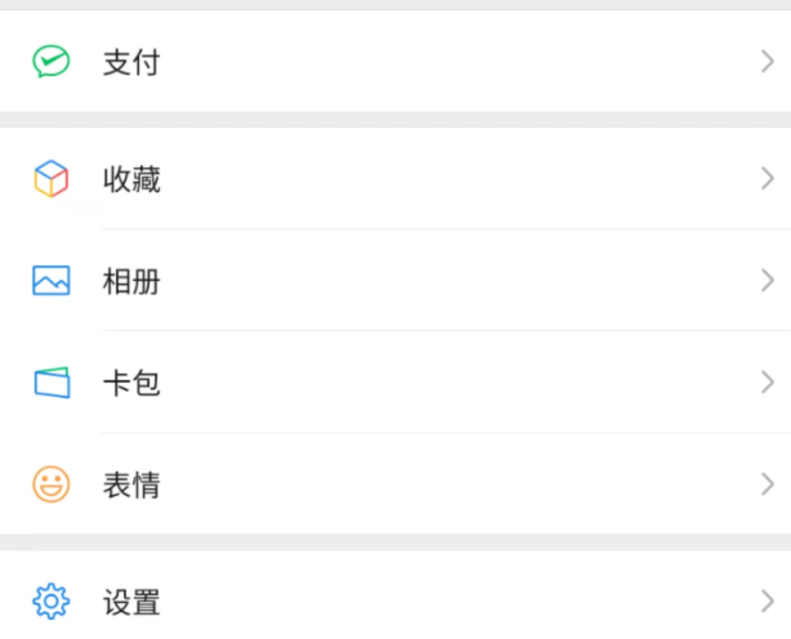
在storyboard中创建一个UItableViewController，并将TableView的类型设置为static cells,并设置节数。
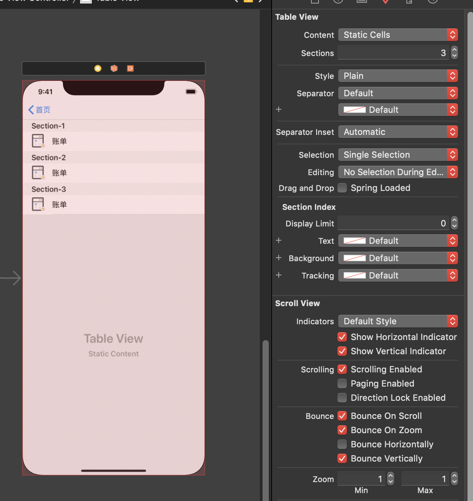
添加TableViewCell
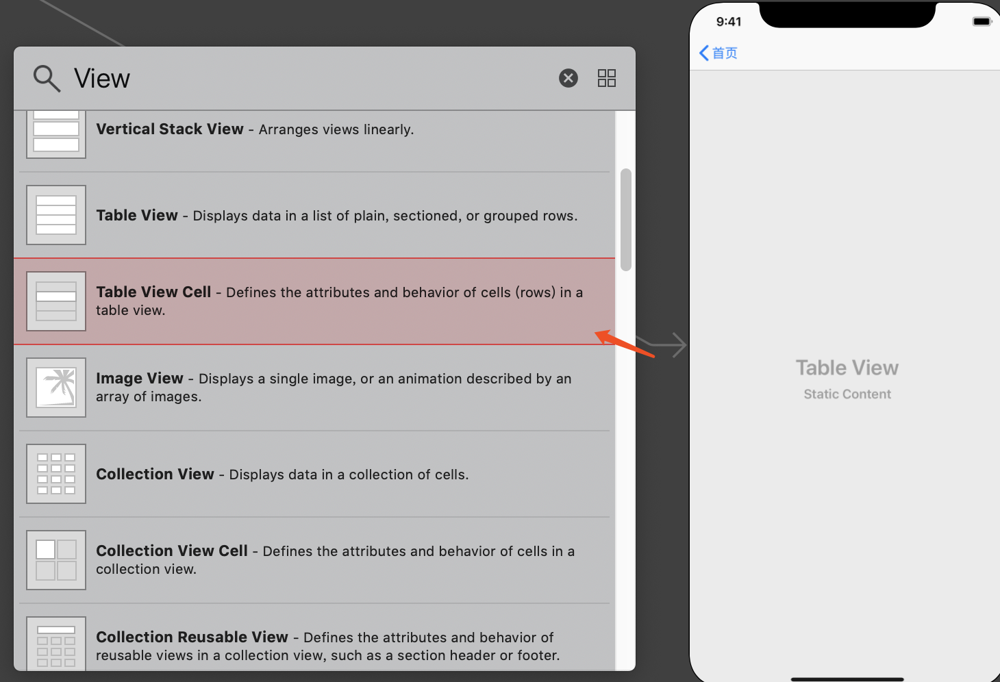
设置TableViewCell的样式，案例设置为Basic即可。
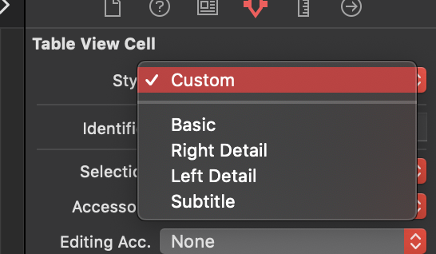
设置标题，图片，配置每节中的行数。设置完后的样式：
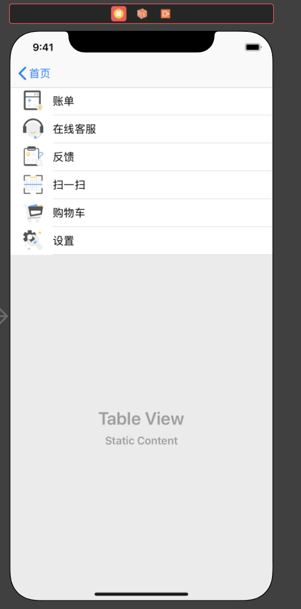
配置一下section header的高度
创建一个类并继承自UITableVIewController，在storyboard中指向它。
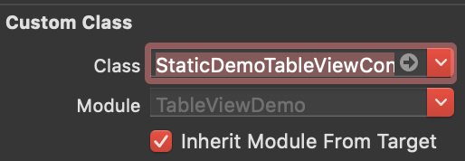
实现三个方法，以配置节数和行数和节头的高度。
1 | override func numberOfSections(in tableView: UITableView) -> Int { |
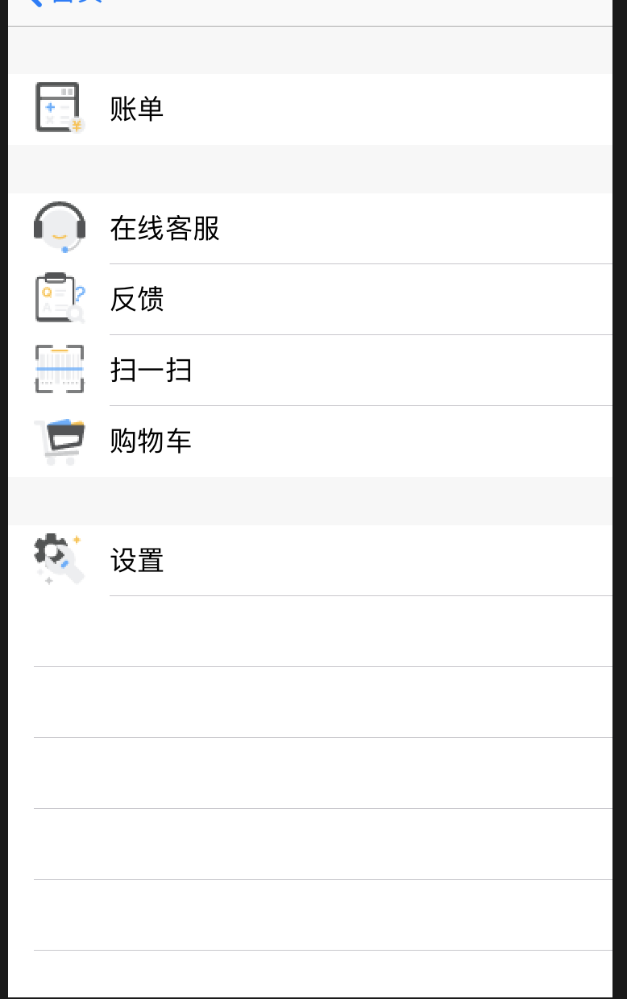
可以看到后面还有一些空余的行，把它去掉。在viewDidLoad方法中添加以下代码：
1 | self.tableView.tableFooterView = UIView(frame: .zero) |
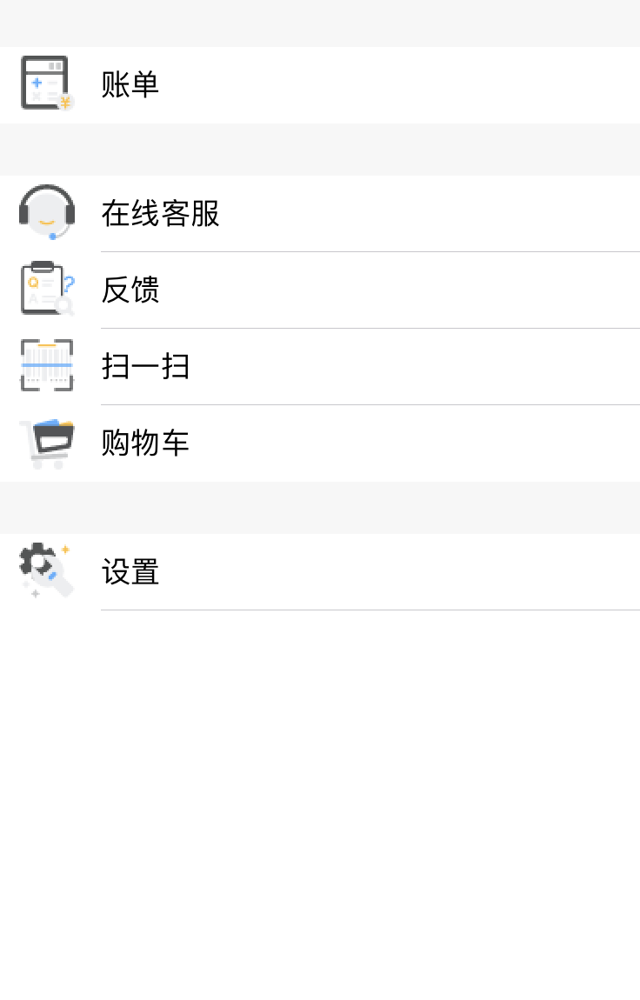
也可以在storyboard中设置头高和脚高，
指定TableView，并配置高度
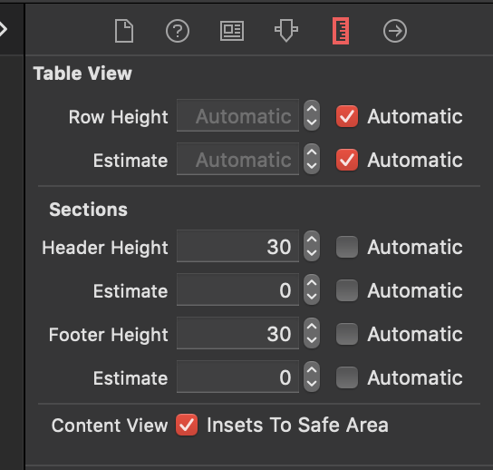
指定Section，并配置，在Header中写一个空格即可。
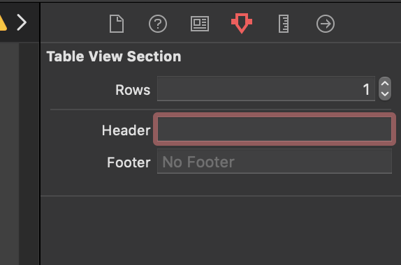
参考资料
https://developer.apple.com/documentation/uikit/uitableview
https://developer.apple.com/documentation/uikit/uitableviewdatasource
https://developer.apple.com/documentation/uikit/uitableviewdelegate
https://developer.apple.com/documentation/uikit/uitableviewcell